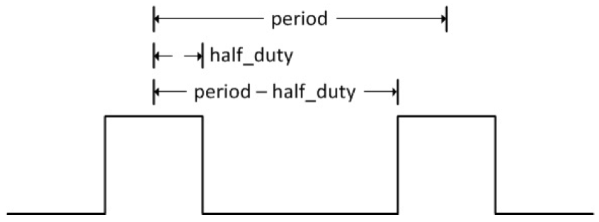
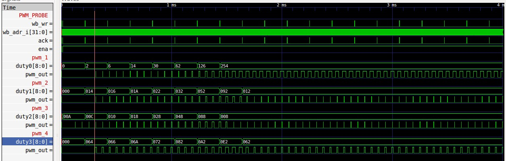

Para regular el ciclo de trabajo de una señal, es decir, regular la proporción de la parte que queda en alto de la señal con relación a todo el período, se utiliza una modulación por ancho de pulsos "pulse width modulation" PWM. En el caso de señales digitales, se regula la pate alta representada por el 1 lógico con relación al periodo completo que es la parte alta más la baja.
| Port | Función |
|---|---|
| clock | Reloj del sistema |
| reset | Reset activa el bajo asíncrono |
| enable | 0: PWM continua produciendo el ciclo de corriente duty. 1: Se hace el nuevo ciclo de trabajo y ajusta PWM en en centro de los pulsos. |
| duty | Nuevo ciclo duty |
| pwm_out | Salida PWM. El PWM modula alrededor del centro del pulso con fases espaciadas de forma uniforme |
| pwm_n_out | Salida PWM invertida |
El algorítmo utilizado para la modulación de pulso fué basado el la documentación citada en el hincapié, debido a que con este algoritmo es posible utilizar varias fases distintas.
El centro de cada pulso se preoduce en la frecuencia PWM y el ancho del pulso varía alrededor del centro. La figura abajo que sigue, ilustra el concepto utilizado.
Un ejemplo, si se generan 3 fases, las tres salidas PWM estaran desfazadas en 120 grados entre sí.
| valor configurable | Función |
|---|---|
| sys_clk | Frecuencia del reloj |
| pwm_freq | Frecuencia pwm |
| resolución de bits | Numero de bits de resolución |
| fases | Numero PWMs y fases |
Como se puede ver en la simulación, dependiendo del valor de duty, el ancho del alto, en la señal de salida del PWM, cambia. Cuando el valor de duty es mayor, la salida del PWM presenta mayor ancho en alto, con relación al ciclo del reloj.
